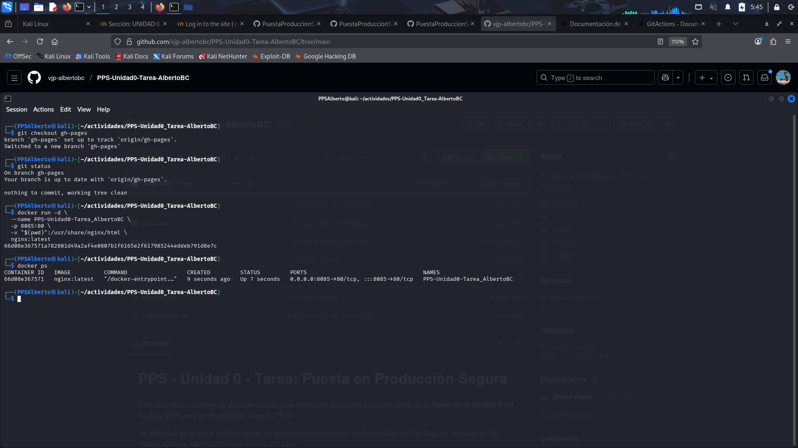

4. Contenedor de Servicios NGINX con Docker
El objetivo de esta sección es crear un servicio web local utilizando Docker y la imagen de NGINX para publicar la documentación estática generada por MkDocs. Esto demuestra la capacidad de utilizar Bind Mounts para servir contenido generado por un proceso de CI/CD.
4.1. Preparación y Despliegue del Contenedor
La documentación de MkDocs se encuentra en la rama gh-pages. Para que el contenedor NGINX pueda servirla, debemos asegurarnos de que el directorio local de trabajo se encuentre en esa rama.
Paso 1: Cambiar a la rama gh-pages
Primero, nos aseguramos de que el directorio local del repositorio contenga la documentación compilada (HTML, CSS, JS) al cambiar a la rama de despliegue:
# Navegar a la raíz del repositorio de la tarea
cd PPS-Unidad0-Tarea-Tu_nombre
# Cambiar a la rama que contiene la documentación estática
git checkout gh-pages
Paso 2: Ejecución del Contenedor NGINX con Bind Mount
Utilizaremos el comando docker run para crear y ejecutar el contenedor con las características solicitadas:
-
Nombre del Contenedor:
PPSUnidad0-Tarea_Tu_nombre -
Redirección de Puerto: Mapear el puerto
8085del host al puerto interno80de NGINX (-p 8085:80). -
Bind Mount: Montar el directorio de trabajo actual (
$(pwd), que es la ramagh-pages) al directorio de servicio de NGINX (/usr/share/nginx/html).
# Comando de ejecución con Bind Mount:
docker run -d \
--name $NOMBRE_CONTENEDOR \
-p 8085:80 \
-v "$(pwd)":/usr/share/nginx/html \
nginx:latest
Explicación del Bind Mount: El argumento -v "$(pwd)":/usr/share/nginx/html mapea el contenido en vivo de nuestra carpeta local (que ahora es la documentación HTML de gh-pages) directamente al directorio que NGINX utiliza para servir páginas web dentro del contenedor. Esto logra la publicación de la documentación.
## 4.2. Evidencias de Creación y Visualización
Evidencia 1: Creación de la Máquina
Se verifica que el contenedor se ha creado y está en ejecución correctamente.
docker ps

Evidencia 2: Visualización de la Página Web
Se accede a la dirección http://localhost:8085 en el navegador para confirmar que NGINX está sirviendo la documentación de MkDocs montada desde el volumen local.

Evidencia 3: Información Completa del Contenedor
Se utiliza el comando docker inspect para obtener la configuración detallada del contenedor, demostrando el uso del Bind Mount y el mapeo de puertos.
docker inspect PPSUnidad0-Tarea_Tu_nombre